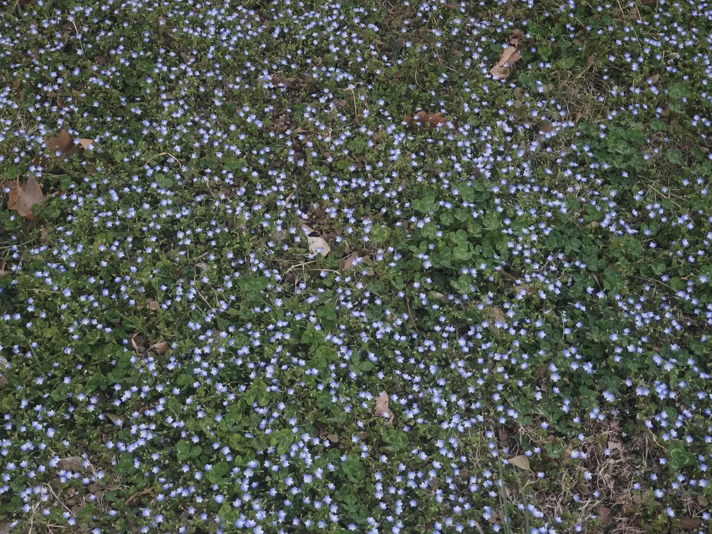
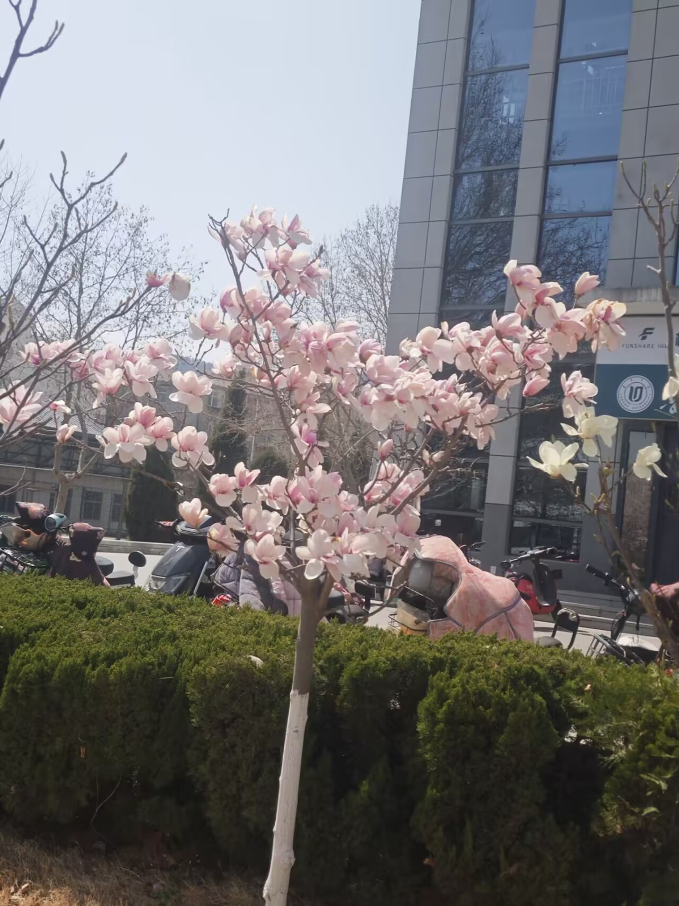

春日的春华校园，最动人的景致，莫过于这一树树次第绽放的玉兰花。抬眼望去，整棵玉兰树像被春日的画笔晕染过，满枝桠都是蓬勃的生机。绝大多数花朵是纯净的乳白，像一只只振翅欲飞的白鸽，停在深褐的枝桠间，花瓣舒展着，带着清晨的露气，在阳光下泛着温润的柔光；而几枝艳红的玉兰，像不小心打翻了胭脂盒，在一片素白里炸开热烈的春意，粉艳的花瓣层层叠叠，在风里轻轻摇曳，把春日的浪漫拉到了极致。走在校园的主干道上，玉兰树沿着道路铺展开来，抬头是满树繁花，低头是落英铺就的花径，风一吹，花瓣簌簌落下，像一场温柔的花雨，落在肩头，落在发间，连空气里都飘着淡淡的、清冽的花香。除了玉兰，校园里的春色无处不在：人工湖畔的垂柳抽出了嫩黄的新芽，柔软的枝条垂在水面上，轻轻拂过波光粼粼的湖面，惊起一圈圈温柔的涟漪；路边的二月兰连成一片淡紫色的海洋，与远处的教学楼、图书馆相映成趣；图书馆前的大草坪上，学子们或坐或卧，或捧书阅读，或轻声闲聊，抬头便是澄澈的蓝天和舒展的云朵，耳边是风吹过树叶的沙沙声，时光在这里都变得缓慢而温柔。春日的校园，每一寸土地都浸着生机，每一缕风都裹着花香，每一个角落都藏着青春的诗意，是刻在每个学子心底最温柔的底色。
春华校园的美，从来不止春日的玉兰，而是藏在四季流转的每一个瞬间里。夏日的校园，是浓荫蔽日的清凉。玉兰树早已长满了翠绿的叶片，浓密的树冠撑起一片阴凉，走在树下，蝉鸣声声里，阳光透过叶隙洒下，在地面织就斑驳的网，连风都带着草木的清香。人工湖畔成了学子们的避暑胜地，坐在湖边的石凳上，看白鹅在水面悠闲划水，听风吹过湖面的轻响，所有的燥热都被抚平。秋日的校园，是银杏铺就的金黄。主干道两侧的银杏叶渐渐变黄，秋风一吹，满树金黄簌簌落下，踩上去沙沙作响，像踩在秋日的诗行里。桂花也在这时悄然绽放，甜香弥漫在校园的每一个角落，连空气都变得甜润起来，图书馆、教学楼里，都飘着淡淡的桂香，陪着学子们度过一个又一个伏案苦读的日夜。冬日的校园，虽显清寂，却自有风骨。玉兰树落尽了花叶，深褐的枝桠在蓝天的映衬下，像一幅极简的水墨画，而腊梅在寒风中凌寒绽放，暗香浮动，为萧瑟的冬日添了一抹亮色。雪后的校园更是绝美，屋顶、枝头、草坪都被白雪覆盖，整个校园银装素裹，纯净得像童话世界，学子们在雪地里嬉笑打闹，给冬日的校园添了无限生机。四季流转，春华校园的景致各有韵味，却始终是学子们最温暖的港湾，见证着每一段青春的成长与蜕变。

